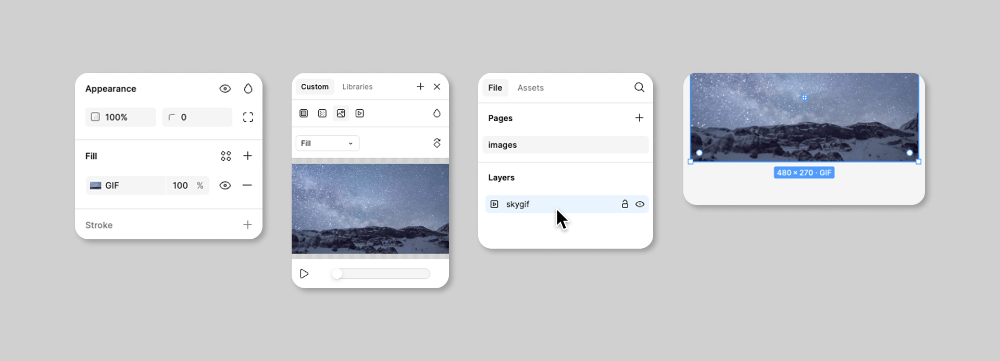
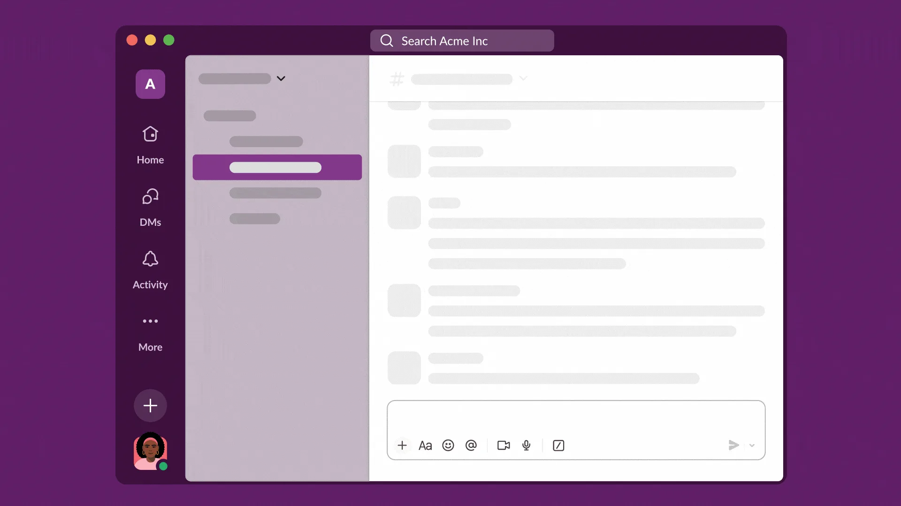

Hi ha una pràctica molt estesa en la documentació de programari que em resulta especialment irritant: utilitzar GIF animats per explicar com funciona alguna cosa.
Els trobem pertot arreu. Tutorials de programació, manuals d’aplicacions, demostracions de funcionalitats, guies d’instal·lació. Una petita animació ens mostra com obrir un menú, seleccionar una opció, arrossegar un element i obtenir un resultat.
Aparentment és una bona idea. En pocs segons podem veure un procés que requeriria diversos paràgrafs per explicar-lo. Però moltes d’aquestes animacions no es poden aturar, ni fer avançar lentament, ni examinar fotograma a fotograma.
Per a mi, que tinc baixa visió, això representa sovint una barrera insuperable. I no soc l’únic.
El problema no és l’animació. El problema és que algú altre ha decidit a quina velocitat he d’entendre les coses.
Una explicació que desapareix
Per seguir un tutorial necessito poder acostar-me a la pantalla, ampliar-ne una zona, identificar on és el cursor i entendre quin element ha canviat. Mentrestant, el GIF continua. Quan he localitzat el menú, ja mostra el resultat final. Quan torna a començar, he de reconstruir mentalment el punt exacte on m’he perdut.
Una animació contínua exigeix veure, interpretar i recordar al ritme que ha triat l’autor. Això perjudica persones amb baixa visió, dificultats cognitives o d’atenció, problemes de processament visual, sensibilitat al moviment i limitacions motrius. També perjudica qualsevol persona cansada, distreta o que està aprenent una interfície nova.
El criteri 2.2.2 de les WCAG 2.2, “Pause, Stop, Hide”, demana un mecanisme per pausar, aturar o ocultar el contingut en moviment que comença automàticament i dura més de cinc segons. És un mínim. En un tutorial, pausar pot no ser suficient: sovint també cal retrocedir, avançar i inspeccionar cada pas.
No és un cas excepcional
Les mateixes empreses que construeixen eines digitals utilitzen o admeten GIF animats en els seus productes i materials d’ajuda. Això no vol dir que totes les seves implementacions siguin igualment problemàtiques, però mostra fins a quin punt el format s’ha normalitzat.

L’animació comença aturada. El botó Atura recupera el primer fotograma.

L’animació comença aturada. El botó Atura recupera el primer fotograma.
- Figma permet incorporar GIF animats als prototips i reproduir-los en la vista de presentació.
- Slack utilitza GIF animats en pàgines d’ajuda i també els integra en els missatges.
- Microsoft publica mostres de codi per reproduir GIF i controlar-ne la reproducció.
- Notion admet GIF com a format d’imatge dins de les pàgines.
- GitHub pot mostrar GIF, però ofereix una preferència d’accessibilitat per desactivar-ne la reproducció automàtica i la seva guia editorial diu explícitament que no se n’utilitzin a la documentació.
El cas de GitHub és especialment interessant perquè mostra dues decisions correctes: donar a la persona usuària control global sobre el moviment i adoptar una norma editorial que evita els GIF animats a la documentació. Es pot consultar tant a Managing accessibility settings com a la seva guia d’estil.
Una alternativa que sí que puc controlar
La demostració següent explica un procés inventat: activar una opció per reduir el moviment. No comença sola. Es pot reproduir i pausar, però també avançar i retrocedir fotograma a fotograma. Cada estat és independent i conserva una explicació textual.
Exemple: activar “Redueix el moviment”
1. Obre Configuració
Com hauria de ser un tutorial visual
No cal eliminar tota animació. Cal deixar de tractar-la com una seqüència tancada que obliga tothom a mirar de la mateixa manera. Un tutorial accessible hauria de:
- no començar automàticament;
- incloure reproducció, pausa, anterior i següent;
- permetre examinar cada pas sense límit de temps;
- oferir instruccions textuals equivalents;
- identificar visualment què canvia en cada pas;
- respectar la preferència del sistema
prefers-reduced-motion; - utilitzar vídeo amb controls o una sèrie d’imatges estàtiques quan siguin alternatives més clares.
Una prova molt senzilla: si una persona no pot aturar la demostració, ampliar-ne una part i continuar des del mateix punt, el tutorial no està sota el seu control.
El temps també forma part de l’accessibilitat
Sovint parlem d’accessibilitat en termes de contrast, mida de lletra, text alternatiu o navegació amb teclat. Però també hi ha una accessibilitat temporal: tenir prou temps per percebre, comprendre i actuar.
Un GIF animat sense controls pren aquest temps i el converteix en una imposició. La solució no és complexa. És donar el control a qui mira.
I, sobretot, recordar una cosa elemental: un tutorial només és útil si la persona que el necessita el pot seguir.